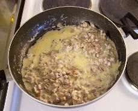

Keittokirja
Olet sivuillani kävijä.
Sisällysluettelo
- Broileriruokia
- Juomia
- Jälkiruokia
- Kakkureseptejä
- Kalaruokia
- Kastikkeita
- Keittoja
- Leipäreseptejä
- Liharuokia
- Pastaruokia
- Pullareseptejä
- Pikkuherkkuja
- Atsovärit
- seti@kauppinen.com
Sivut päivitetty 9.9.2019
Pastaruokia
Keittokirjan etusivulle.
Kauramakaronipata.Esan Italian tuliainen (pastakastike)
Kauramakaronipata
- 250 g Kauramakaronia
- n. 2 litraa vettä
- 1 rkl öljyä
- 1 tl suolaa
- 100 g pekonia (ei pakollista)
- 400 g broilerinlihaa
- 1 sipuli
- 1 paprika (punainen sopii parhaiten)
- 1 tl currya
- ½ dl vehnäjauhoja
- 6 dl vettä
- 1-2 kanaliemikuutiota
- 100-150 g sulatejuustoa (Koskenlaskija on parasta)
Keitä makaroneja noin 5 minuuttia ja valuta lävikössä. Suikaloi pekoni ja broilerinliha ja ruskista ne kevyesti kasarissa. Lisää suikaloidut sipuli ja paprika. Anna hautua hetki. Lisää curry, vehnäjauhot, vesi ja kanaliemikuutiot. Hauduta noin 5 minuuttia. Lisää sulatejuusto ja keitetty makaroni. Kuumenna ruoka.
Resepti on alunperin löytynyt Melian Kauramakaroni -pussin takaa. Uusi tuotepakkaus on jo markkinoilla ja siinä uusi resepti. Tämä resepti on kuitenkin parempi.
[Broilerihakemiston alkuun] [Pastaruokahakemiston alkuun]

{kind=link}
Esan Italian tuliainen (pastakastike)
- 1 paketti pekonia
- 300 - 400 g saunapalvikinkkua
- 1 prk Creme Fraiche lightia tai muuta 'paksua' kermaa
- Parmesan juustoa, tuoretta tai valmiiksi raastettua
- mustapippuria
- Tuorepastaa, perhospasta sopii hyvin
{kind=link}
Suikaloi pekoni ja paloittele kinkku pieniksi kuutioiksi. Paista pekonit rapeiksi niin että niistä sulaa rasva pois. Lisää pannuun kuutioitu kinkku ja anna kinkun hetken aikaa kuumeta pannulla. Lisää Creme Fraiche tai Ranskankerma ja anna sen sulaa kastikkeeksi. Älä huolestu jos pekonin rasva ja kerma eivät sekoitu. Raasta kastikkeen sekaan tuoretta parmesania välillä sekoittaen kunnes kastike sakeutuu. Lisää kastikkeen sekaan ohjeen mukaan keitetty tuorepasta. Kastike on ollut sopivan paksua kun ruokailjan lautaselle ei jää yhtään kastiketta vaan kaikki on imeytynyt pastaan.
Tarjoile valkosipulivoi- tai yrttivoipatonkien sekä vihreän salaatin kanssa.
[Pastaruokahakemiston alkuun]